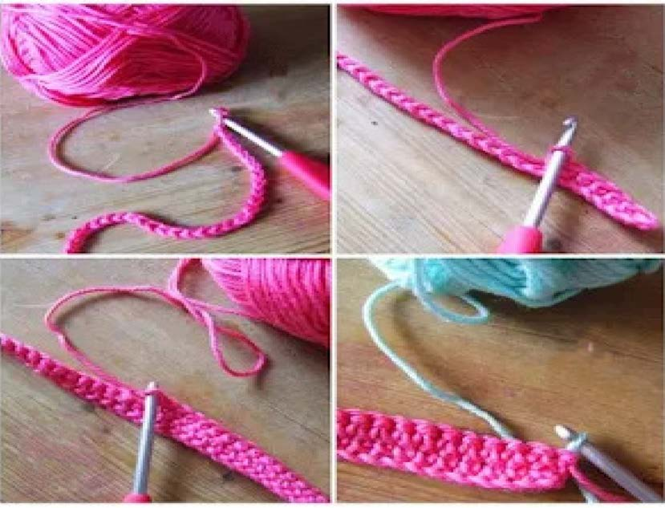
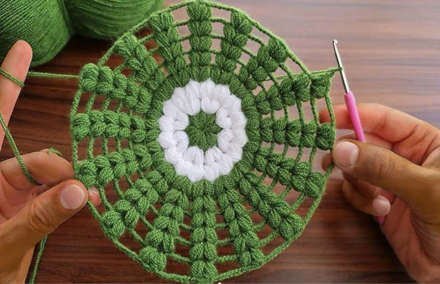

Sura ya Tatu · Ninafanya kazi za sanaa
Kufuma
Kazi za sanaa za mikono
Kazi za sanaa za mikono ni kazi zinazotendeka kwa kutumia mikono yetu. Baadhi ya kazi za sanaa za mikono ni ufumaji, ushonaji, ufinyanzi, uchongaji, utiaji nakshi, uchoraji na ususi.
Kufuma
Kufuma ni kitendo cha kutumia uzi kutengeneza vitu kama kitambaa, soksi, kofia na sweta. Kazi hii hutumia uzi na kifaa kama sindano au kijiti maalumu.
Chunguza picha hizi, kisha jibu maswali yanayofuata:


Maswali
Shughuli ya kwanza
Fuma kitu chochote kwa kutumia uzi na sindano au kijiti.